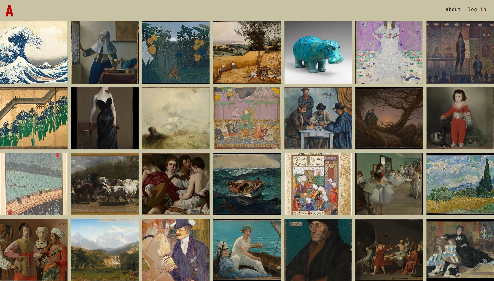

Now
- what
- A weekly recommendation board
- for
- Essays, movies, albums, novels
- with
- Python, FastAPI, the Claude API
azine
Open ↗ How it works
Better for your brain
Feeds are built to keep you scrolling, not to help you find anything good. azine starts from a few sentences about what you love and don't, suggests a handful of things each week, mostly from before 2021, and learns from how you sort them. No influencers, no AI slop.
azine.io